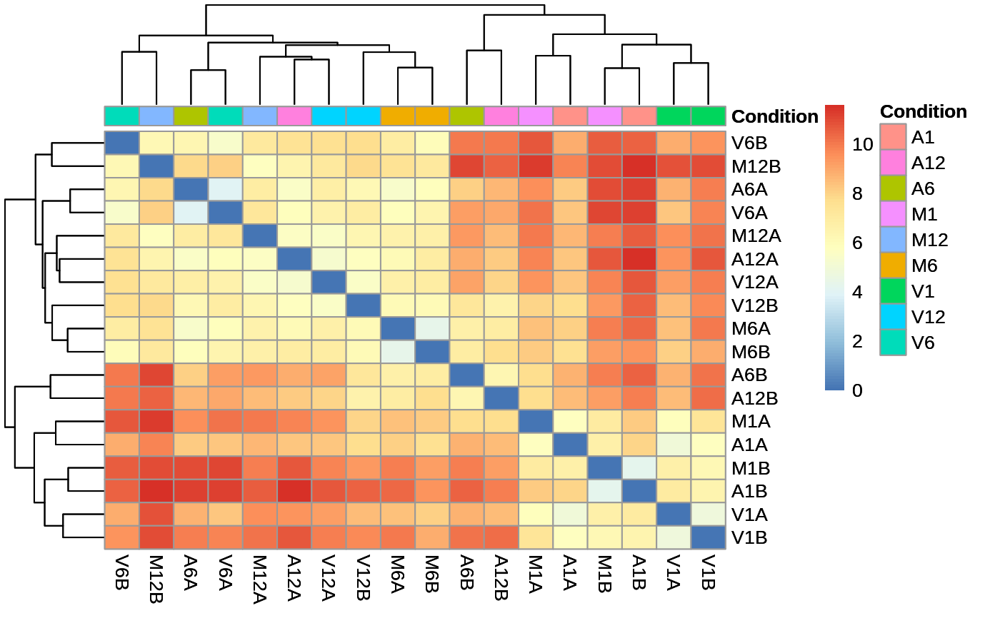
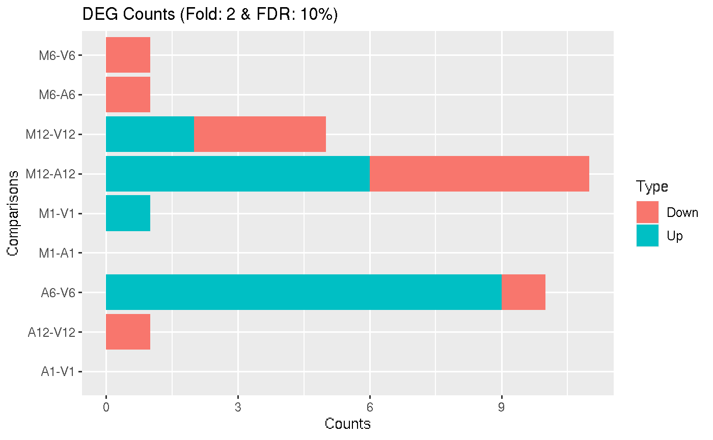
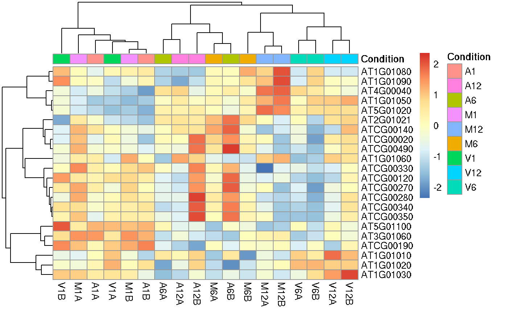

This function performs hierarchical clustering on the transformed expression matrix generated with the DESeq2 package. It uses, by default, a Pearson correlation-based distance measure and complete linkage for cluster join.
heatMaplot( exploredds, clust, DEGlist = NULL, plotly = FALSE, savePlot = FALSE, filePlot = NULL, ... )
| exploredds | object of class |
|---|---|
| clust | sselect the data to apply the distance matrix computation.
If |
| DEGlist | List of up or down regulated gene/transcript indentifiers meeting
the chosen filter settings for all comparisons defined in data frames |
| plotly | logical: when |
| savePlot | logical: when |
| filePlot | file name where the plot will be saved. For more information, please consult the
|
| ... | additional parameters for the |
returns an object of pheatmap or plotly class.
### Load data targetspath <- system.file("extdata", "targets.txt", package="systemPipeR") targets <- read.delim(targetspath, comment="#") cmp <- systemPipeR::readComp(file=targetspath, format="matrix", delim="-") countMatrixPath <- system.file("extdata", "countDFeByg.xls", package="systemPipeR") countMatrix <- read.delim(countMatrixPath, row.names=1) ## Samples plot exploredds <- exploreDDS(countMatrix, targets, cmp=cmp[[1]], preFilter=NULL, transformationMethod="rlog")#> Warning: some variables in design formula are characters, converting to factorsheatMaplot(exploredds, clust="samples")heatMaplot(exploredds, clust="samples", plotly = TRUE) ## Individuals genes identified in DEG analysis ### DEG analysis with `systemPipeR` degseqDF <- systemPipeR::run_DESeq2(countDF = countMatrix, targets = targets, cmp = cmp[[1]], independent = FALSE)#> Warning: some variables in design formula are characters, converting to factorsheatMaplot(exploredds, clust="ind", DEGlist = unique(as.character(unlist(DEG_list[[1]]))), plotly = TRUE)